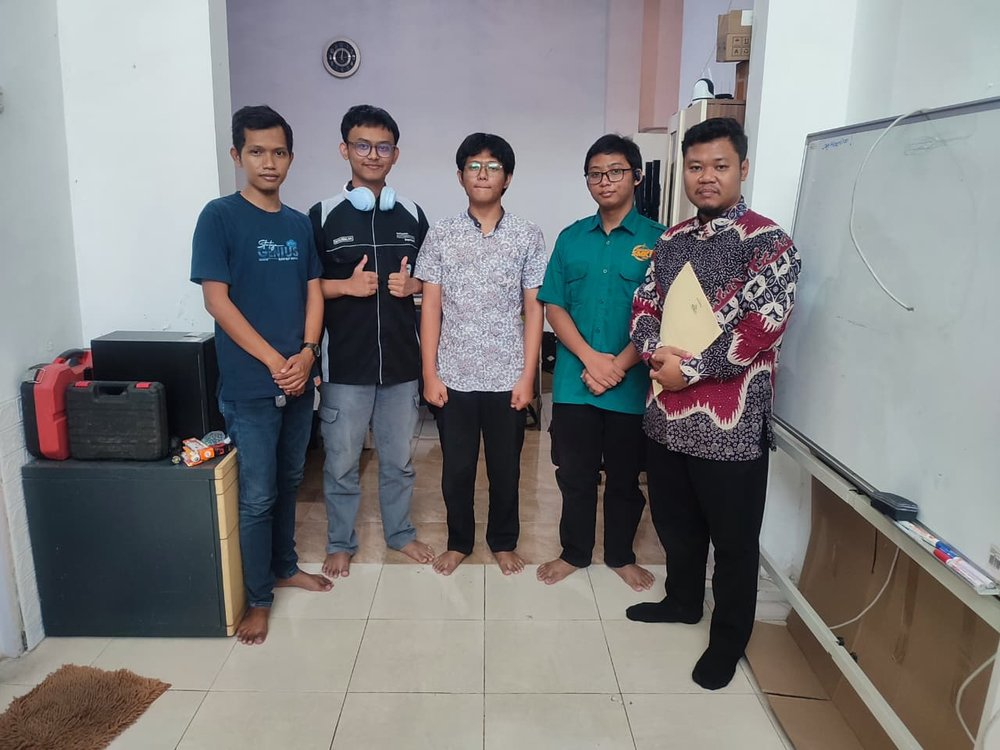
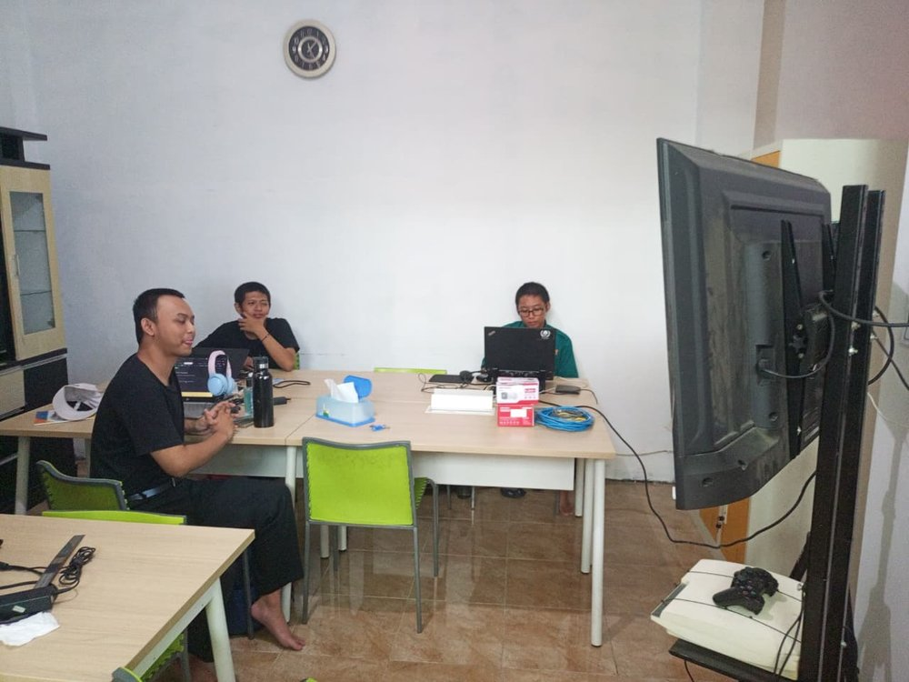

Cerita magang
Pengalaman Praktik Kerja Lapangan di Promedia
Selama menjalani Praktik Kerja Lapangan (PKL) di Promedia — Citra Digital Informatika, saya berkesempatan belajar langsung bagaimana sebuah tim IT bekerja di luar lingkungan sekolah. Mulai dari cara berdiskusi memecahkan masalah teknis, membagi tugas antar anggota tim, sampai membiasakan diri dengan alur kerja yang lebih terstruktur.
Pengalaman ini banyak membentuk cara saya memandang dunia kerja di bidang teknologi — bukan cuma soal menulis kode, tapi juga komunikasi, kedisiplinan, dan kemauan untuk terus belajar hal baru.

